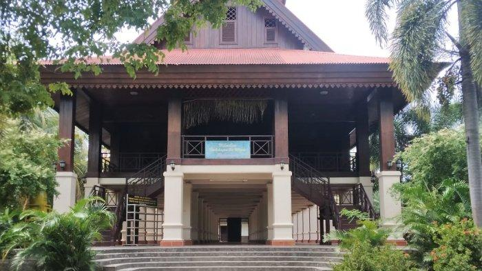

Sejarah dan Makna
Rumah adat Dulohupa adalah rumah tradisional dari Gorontalo yang digunakan sebagai tempat musyawarah adat. Nama "Dulohupa" sendiri berarti "kesepakatan" dalam bahasa Gorontalo. Rumah ini memiliki nilai budaya yang sangat tinggi dan menjadi simbol kearifan lokal masyarakat Gorontalo dalam bermusyawarah.

Ciri Khas Rumah Dulohupa
- Berbentuk rumah panggung dengan tiang kayu sebagai penyangga.
- Atap berbentuk limas dengan ornamen khas Gorontalo.
- Memiliki tangga di bagian depan dan belakang rumah.
- Terbuat dari bahan kayu berkualitas tinggi untuk ketahanan jangka panjang.
- Memiliki ukiran khas yang melambangkan kepercayaan dan adat istiadat setempat.
Fungsi Rumah Dulohupa
Selain sebagai tempat musyawarah adat, Rumah Dulohupa juga memiliki beberapa fungsi lain, antara lain:
- Sebagai tempat pelaksanaan upacara adat dan prosesi penting.
- Digunakan untuk pertemuan resmi antara para pemuka adat dan masyarakat.
- Menjadi ikon budaya dan pariwisata di Gorontalo.
Keunikan Rumah Dulohupa
Rumah adat Dulohupa memiliki beberapa keunikan yang membedakannya dari rumah adat lainnya di Indonesia:
- Arsitektur yang mencerminkan nilai kebersamaan dan demokrasi dalam masyarakat Gorontalo.
- Simbolisme dalam setiap elemen bangunan, termasuk jumlah tiang yang melambangkan struktur sosial masyarakat.
- Proses pembangunan yang masih mempertahankan metode tradisional tanpa menggunakan paku.